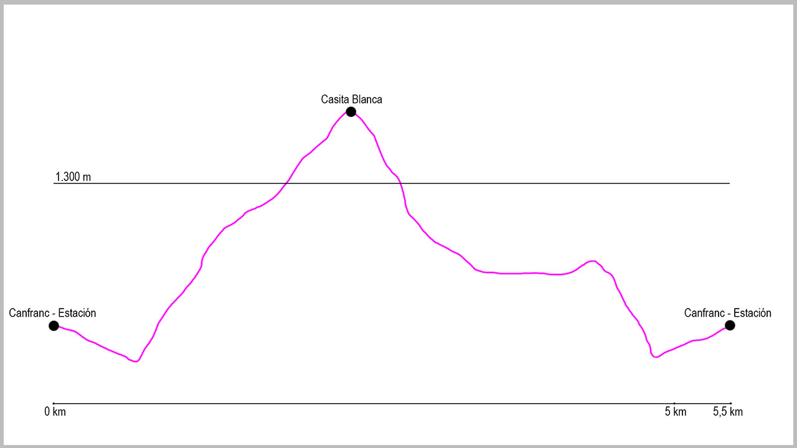

Desde el puente de la Estación de Canfranc, punto de salida de la ruta, tomaremos la calle principal de Canfranc-Estación en dirección sur. Tras 750 metros de ligero descenso, saldremos del casco urbano para llegar a la central de Canal Roya, y justo al pasarla cruzaremos un puente que sale a nuestra izquierda. Nada más pasarlo comienza una pista de forma ascendente que a poco más de 100 metros del inicio se bifurca. En este momento tomaremos la pista de la izquierda. La pista transcurre en su totalidad por bosque.
A lo largo del recorrido encontraremos varios cruces como “Paseo de Los Melancólicos” o “Ibón de Ip”, que dejaremos a la izquierda y derecha respectivamente. Poco después de este cruce atravesaremos el barranco del Borreguil de Samán y al poco tendremos la fuente de la Herradura.
Seguiremos en este momento por pista de manera ascendente hasta llegar a nuestro objetivo, poco después de cruzar el barranco de Epifaneo. Cuando llegamos a la Casita Blanca empieza el descenso de la ruta. Atravesaremos una antigua cuba de riego por el borde y cogeremos el camino que está al otro lado de la misma. El camino es cómodo y tras varias curvas nos llevará a la pista de Coll de Ladrones, donde giraremos a nuestra izquierda. Descenderemos por dicha pista apenas 100 metros, para volver a girar a nuestra izquierda y coger el paseo de Los Melancólicos, que paralelamente a la Estación internacional de Canfranc nos llevará de nuevo hasta la pista de Picaube.
Cuando lleguemos a ella la tomaremos esta vez en sentido descendente, para llegar así al inicio de la misma y a la travesía de Canfranc-Estación. Giraremos a la derecha para ascender por la calle principal hasta el punto de partida de la ruta.
